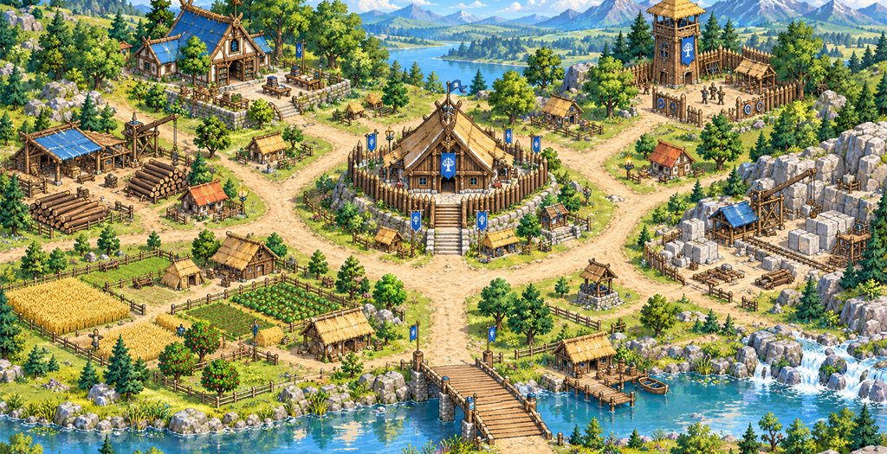
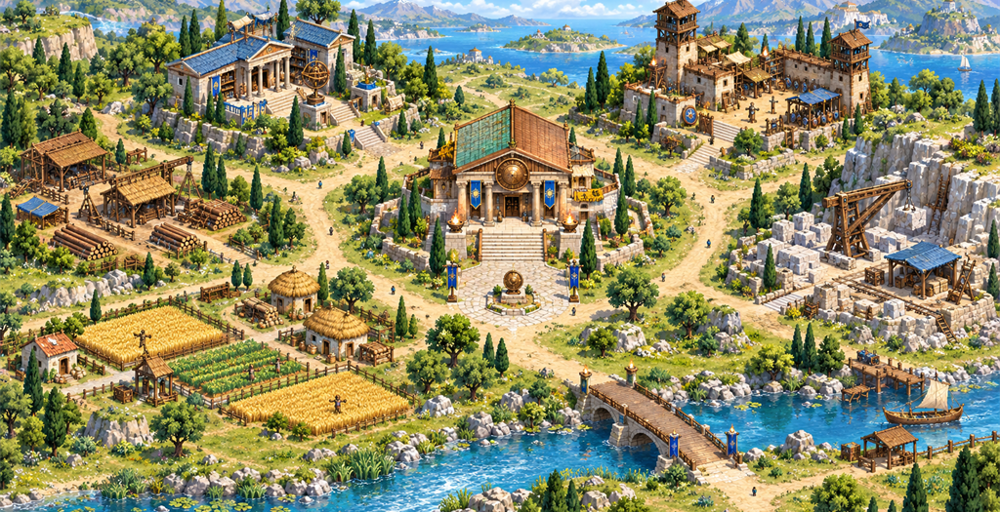
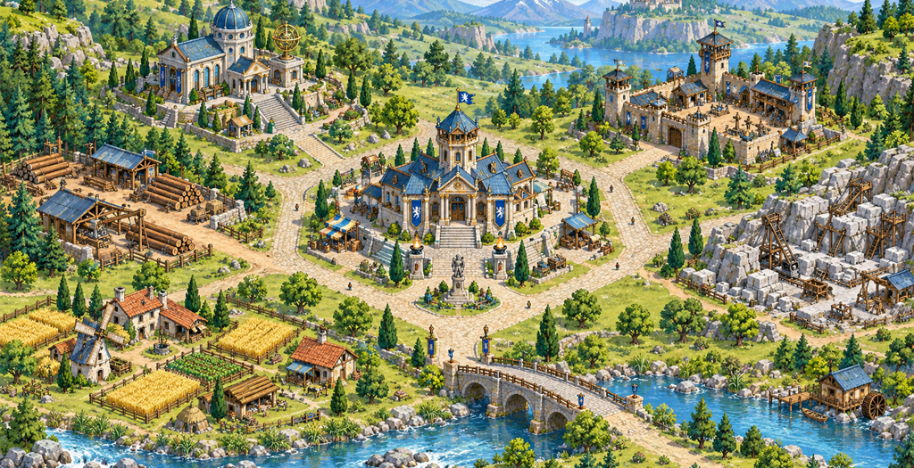
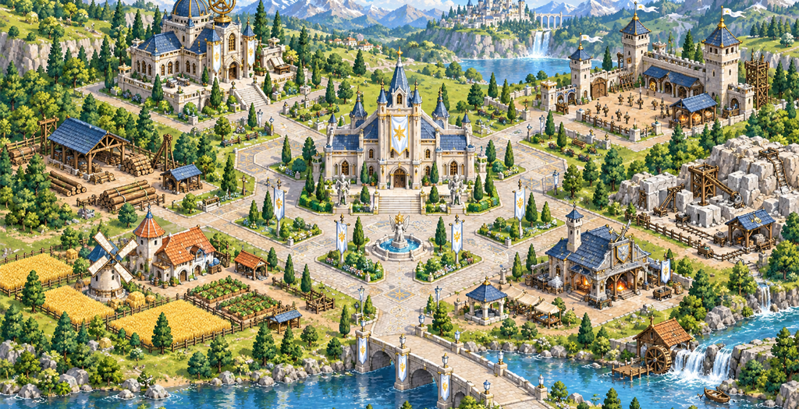
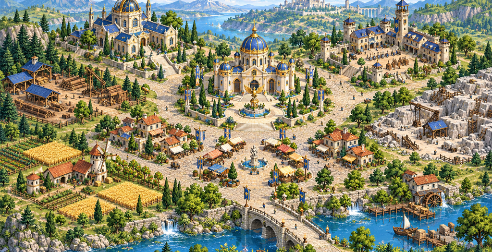
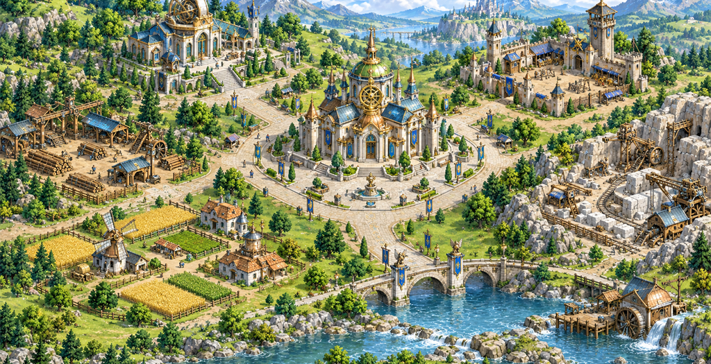
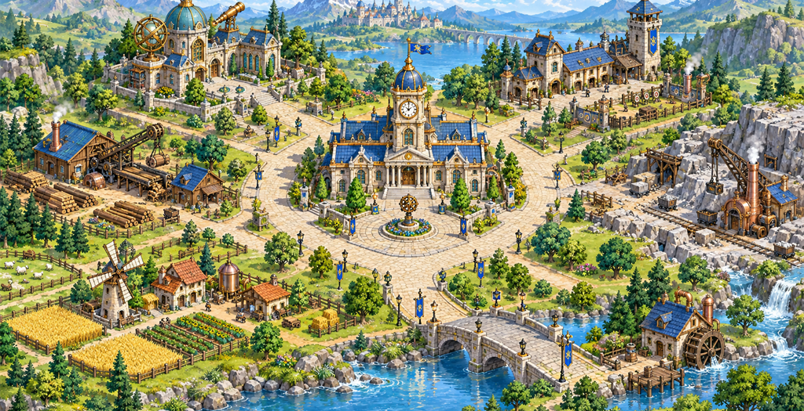
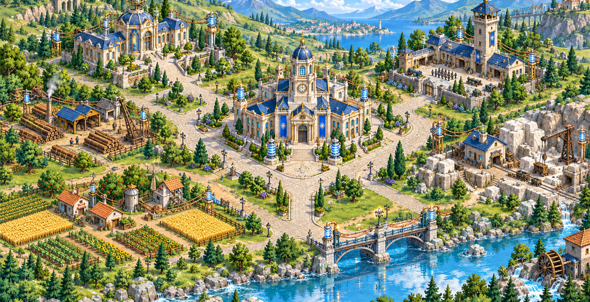
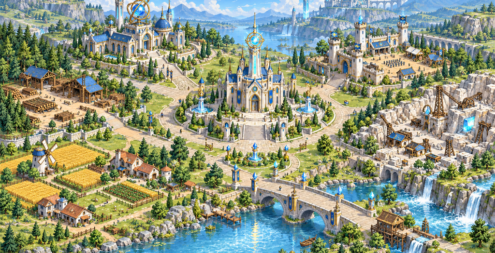

初始 base
三维候选，画质待人工验收



中心轮廓：Oak hall, straw roof, ring of stone and timber palisade。时代道具：timber fence、woodcutting tools、small watch post。
模型：33,474 面 / 6.78 MiB；完整拾取节点 0 / 7。
每块图以真实手机地图尺寸 360 × 200 CSS px 显示；清场是合成候选，三维图是独立镜头渲染，尚未与原全景合成。贴图、镜头、轮廓和场景密度需人工逐项比较。此页只用于制作评审，游戏不会加载。
base三维候选，画质待人工验收

中心轮廓：Oak hall, straw roof, ring of stone and timber palisade。时代道具：timber fence、woodcutting tools、small watch post。
模型：33,474 面 / 6.78 MiB；完整拾取节点 0 / 7。
sci_bronze_age三维候选，画质待人工验收



中心轮廓：Limestone portico, terracotta and patina roof, bronze crest。时代道具：foundry、bronze shield lookout、columned front。
模型：8,126 面 / 3.58 MiB；完整拾取节点 0 / 7。
sci_iron_age缺三维模型


中心轮廓：Higher ashlar stone walls, blue iron-tile pitched wings and central tower。时代道具：charcoal forge、iron bound gate、battlement parapet。
模型：尚无 GLB / 可编辑源 / 独立重导入对照。
sci_silver_age缺三维模型


中心轮廓：Light stone council hall, silver ridge and repeated arches。时代道具：silversmith、paved plaza、white pennants。
模型：尚无 GLB / 可编辑源 / 独立重导入对照。
sci_gold_age缺三维模型


中心轮廓：Two storey sandstone civic hall, restrained gold dome and colonnade。时代道具：artisan market、clock、fountain。
模型：尚无 GLB / 可编辑源 / 独立重导入对照。
sci_alloy_age缺三维模型


中心轮廓：Composite metal roof with visible truss and copper-silver frame。时代道具：alloy forge、green transmission gear、reinforced bridge。
模型：尚无 GLB / 可编辑源 / 独立重导入对照。
sci_steam_age缺三维模型


中心轮廓：Brick and stone clock tower, copper piping, short clean chimney。时代道具：boiler room、gear workshop、thin white steam。
模型：尚无 GLB / 可编辑源 / 独立重导入对照。
sci_electric_age缺三维模型


中心轮廓：Ivory and cobalt civic hall, blue coils and wire gantries。时代道具：generator house、insulator towers、street lamps。
模型：尚无 GLB / 可编辑源 / 独立重导入对照。
sci_nuclear_age缺三维模型


中心轮廓：Ivory future arches on surviving stone base with restrained cyan core。时代道具：clean energy tower、glass arcade、river and farm continuity。
模型：尚无 GLB / 可编辑源 / 独立重导入对照。